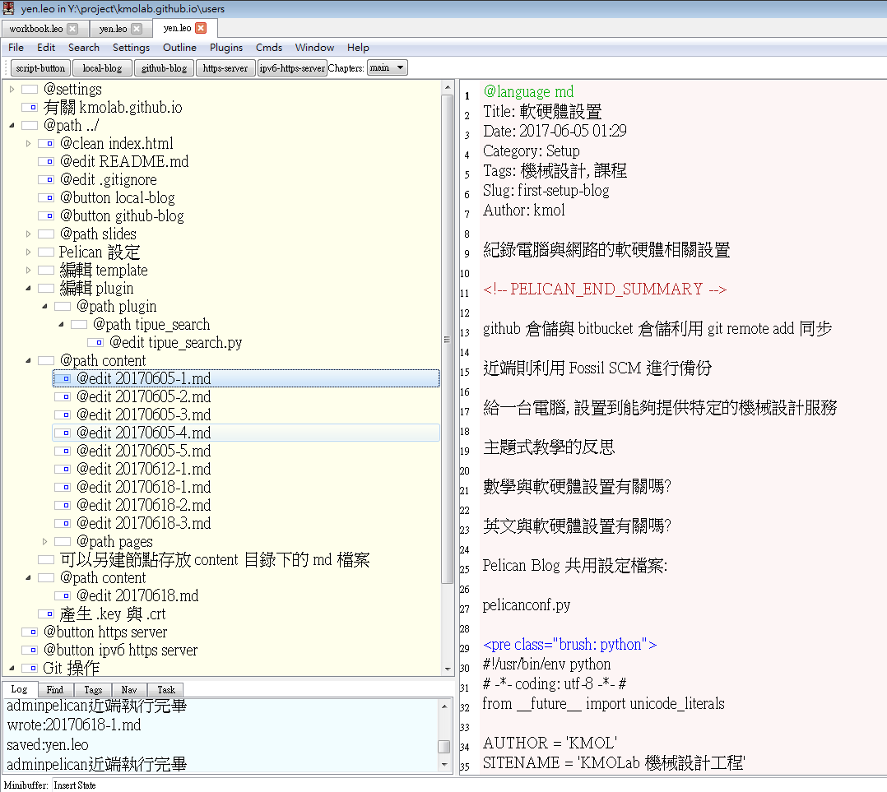
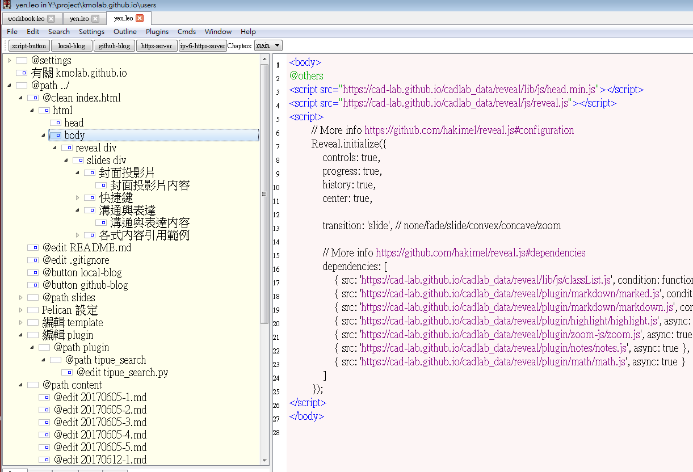

紀錄電腦與網路的軟硬體相關設置
Github, Bitbucket 與 Fossil SCM
Github 目前提供的免費帳號, 允許多人協同提交推送版本, 唯一的限制就是單一檔案不能大於 50 MB.
Bitbucket 則允許免費使用非公開的倉儲, 但是至多只允許五個帳號協同.
Fossil SCM 則適合在近端或區域網路中使用, 目前 KMOLab 希望在區網中導入作為與 Github Pages 配合的工具, 使用者可以將 Fossil SCM 的 working directory 限縮在 Github 近端倉儲的特定目錄下, 且在 .gitignore 中排除 FOSSIL (under Windows) 的版次管理, 但是相關的 fossil update 與 fossil server 功能仍然必須依照特定的流程進行操作, 以避免兩套版次管理系統內容的不同步導致資料覆蓋流失.
github 倉儲與 bitbucket 倉儲, 則可以利用 git remote add 同步.
Leo Editor, Pelican 與 Reveal.js
Leo Editor 是一套能夠以程式方法有效管理多元資料的文字資料編輯器, 以下就是用來管理 KMOLab Pelican 靜態網誌有關內容的畫面, 其中的 @button local-blog 是用來產生靜態網誌的指令按鈕, @button github-blog 則是用來產生嵌入 Disqus 留言系統的 Github Pages 網誌對應指令, 兩個指令的差別在於使用不同的設定檔案, 使用者可以先利用近端的按鈕, 建立網誌後在近端以另一個 https-server 按鈕建立 https 伺服, 用瀏覽器檢查所產生的網誌內容, 一旦要送到 Github 倉儲, 必須再利用遠端按鈕產生另外一組網誌與搜尋用 .json 檔案後, 再提交推送到倉儲.
在這個過程中, 使用者依照 Pelican 的特定 Markdown 檔案編寫網誌內容外, Leo Editor 專案檔中也可以放入其他有關的註記與設定檔案編輯用的節點. 若需要在 Pelican 的環境中修改設定, 都可以全部在一個 Leo Editor 專案檔中完成.

Leo Editor 另外一項有用的特定就是能夠利用從屬節點關係與內文指令來表示複雜的 html 檔案, 如下圖所示, 各段落的超文件標註可以利用節點加以切割, 使用者在編寫 reveal.js 投影片時, 可以只集中在特定簡報內容的編寫, 並且透過節點的複製與搬移, 甚至使用 Leo Editor 的節點 clone 功能, 同步相同內容但是同時出現在不同位置的節點.

Pelican Blog 共用設定檔案:
pelicanconf.py
#!/usr/bin/env python
# -*- coding: utf-8 -*- #
from __future__ import unicode_literals
AUTHOR = 'KMOL'
SITENAME = 'KMOLab 機械設計工程'
# 不要用文章所在目錄作為類別
USE_FOLDER_AS_CATEGORY = False
#PATH = 'content'
#OUTPUT_PATH = 'output'
TIMEZONE = 'Asia/Taipei'
DEFAULT_LANG = 'en'
# Feed generation is usually not desired when developing
FEED_ALL_ATOM = None
CATEGORY_FEED_ATOM = None
TRANSLATION_FEED_ATOM = None
AUTHOR_FEED_ATOM = None
AUTHOR_FEED_RSS = None
# Blogroll
LINKS = (('Pelican', 'http://getpelican.com/'),
('pelican-bootstrap3', 'https://github.com/DandyDev/pelican-bootstrap3/'),
('pelican-plugins', 'https://github.com/getpelican/pelican-plugins'),
('Tipue search', 'https://github.com/Tipue/Tipue-Search'),)
# Social widget
#SOCIAL = (('You can add links in your config file', '#'),('Another social link', '#'),)
DEFAULT_PAGINATION = 10
# Uncomment following line if you want document-relative URLs when developing
#RELATIVE_URLS = True
# 必須絕對目錄或相對於設定檔案所在目錄
PLUGIN_PATHS = ['plugin']
PLUGINS = ['summary', 'tipue_search', 'sitemap']
# for sitemap plugin
SITEMAP = {
'format': 'xml',
'priorities': {
'articles': 0.5,
'indexes': 0.5,
'pages': 0.5
},
'changefreqs': {
'articles': 'monthly',
'indexes': 'daily',
'pages': 'monthly'
}
}
# search is for Tipue search
DIRECT_TEMPLATES = (('index', 'tags', 'categories', 'authors', 'archives', 'search'))
# for pelican-bootstrap3 theme settings
#TAG_CLOUD_MAX_ITEMS = 50
DISPLAY_CATEGORIES_ON_SIDEBAR = True
DISPLAY_RECENT_POSTS_ON_SIDEBAR = True
DISPLAY_TAGS_ON_SIDEBAR = True
DISPLAY_TAGS_INLINE = True
TAGS_URL = "tags.html"
CATEGORIES_URL = "categories.html"
MENUITEMS = [('About', '/blog/pages/about/')]
#SHOW_ARTICLE_AUTHOR = True
#MENUITEMS = [('Home', '/'), ('Archives', '/archives.html'), ('Search', '/search.html')]
遠端 publishconf.py
#!/usr/bin/env python
# -*- coding: utf-8 -*- #
from __future__ import unicode_literals
# This file is only used if you use `make publish` or
# explicitly specify it as your config file.
import os
import sys
sys.path.append(os.curdir)
from pelicanconf import *
# 因為 publishconf.py 在 pelicanconf.py 之後, 因此若兩處有相同變數的設定, 將以較後讀入的 publishconf.py 中的設定為主.
# 將所有靜態 html 檔案移到 blog 子目錄
SITEURL = 'https://kmolab.github.io/blog'
# 此設定用於將資料送到 gh-pages, 因此使用絕對 URL 設定
RELATIVE_URLS = False
# 為了要讓 local 與 gh-pages 上都能夠使用 Tipue search, 可能要採用不同的 theme
THEME = 'theme/pelican-bootstrap3'
#BOOTSTRAP_THEME = 'readable'
#BOOTSTRAP_THEME = 'readable-old'
BOOTSTRAP_THEME = 'united'
#PYGMENTS_STYLE = 'paraiso-drak'
#PYGMENTS_STYLE = 'fruity'
# 為了同時兼容 render_math, 必須放棄 fruity
PYGMENTS_STYLE = 'monokai'
FEED_ALL_ATOM = 'feeds/all.atom.xml'
CATEGORY_FEED_ATOM = 'feeds/%s.atom.xml'
DELETE_OUTPUT_DIRECTORY = True
# Following items are often useful when publishing
DISQUS_SITENAME = "kmolabmde"
#GOOGLE_ANALYTICS = ""
# 設定網誌以 md 檔案建立的 file system date 為準, 無需自行設定
DEFAULT_DATE = 'fs'
# 遠端的 code hightlight
#MD_EXTENSIONS = ['fenced_code', 'extra', 'codehilite(linenums=True)']
MARKDOWN = {
'extension_configs': {
'markdown.extensions.codehilite': {'css_class': 'highlight'},
'markdown.extensions.extra': {},
'markdown.extensions.meta': {},
},
'output_format': 'html5',
}
# 若要依照日期存檔呼叫
#ARTICLE_URL = 'posts/{date:%Y}/{date:%m}/{date:%d}/{slug}/'
#ARTICLE_SAVE_AS = 'posts/{date:%Y}/{date:%m}/{date:%d}/{slug}/index.html'
PAGE_URL = 'pages/{slug}/'
PAGE_SAVE_AS = 'pages/{slug}/index.html'
SHOW_ARTICLE_AUTHOR = True
local_publishconf.py
#!/usr/bin/env python
# -*- coding: utf-8 -*- #
from __future__ import unicode_literals
# This file is only used if you use `make publish` or
# explicitly specify it as your config file.
import os
import sys
sys.path.append(os.curdir)
from pelicanconf import *
# 因為 publishconf.py 在 pelicanconf.py 之後, 因此若兩處有相同變數的設定, 將以較後讀入的 publishconf.py 中的設定為主.
# 請注意, 為了在近端讓 Tipue search 傳回的搜尋結果連結正確, 必須使用 ./
SITEURL = './'
# 此設定用於近端靜態網頁查驗, 因此使用相對 URL
RELATIVE_URLS = True
# 為了要讓 local 與 gh-pages 上都能夠使用 Tipue search, 可能要採用不同的 theme
THEME = 'theme/pelican-bootstrap3_local'
#BOOTSTRAP_THEME = 'readable'
#BOOTSTRAP_THEME = 'readable-old'
BOOTSTRAP_THEME = 'united'
#PYGMENTS_STYLE = 'paraiso-drak'
#PYGMENTS_STYLE = 'fruity'
# 為了同時兼容 render_math, 必須放棄 fruity
PYGMENTS_STYLE = 'monokai'
FEED_ALL_ATOM = 'feeds/all.atom.xml'
CATEGORY_FEED_ATOM = 'feeds/%s.atom.xml'
DELETE_OUTPUT_DIRECTORY = True
# Following items are often useful when publishing
#DISQUS_SITENAME = "kmolabmde"
#GOOGLE_ANALYTICS = ""
# 設定網誌以 md 檔案建立的 file system date 為準, 無需自行設定
DEFAULT_DATE = 'fs'
# 近端的 code hightlight
#MD_EXTENSIONS = ['fenced_code', 'extra', 'codehilite(linenums=True)']
MARKDOWN = {
'extension_configs': {
'markdown.extensions.codehilite': {'css_class': 'highlight'},
'markdown.extensions.extra': {},
'markdown.extensions.meta': {},
},
'output_format': 'html5',
}
# 若要依照日期存檔呼叫
#ARTICLE_URL = 'posts/{date:%Y}/{date:%m}/{date:%d}/{slug}/index.html'
#ARTICLE_SAVE_AS = 'posts/{date:%Y}/{date:%m}/{date:%d}/{slug}/index.html'
PAGE_URL = 'pages/{slug}/'
PAGE_SAVE_AS = 'pages/{slug}/index.html'
SHOW_ARTICLE_AUTHOR = True
區網中的 IPv4 與 IPv6 WWW Server
Pelican 在近端產生 weblog 後, 若要在近端以 https 檢視結果, 就必須同時建立 https Server.
近端 IPv4 WWW 伺服器程式:
import os
import subprocess
import threading
import http.server, ssl
def domake():
# build directory
os.chdir("./../")
server_address = ('localhost', 5443)
httpd = http.server.HTTPServer(server_address, http.server.SimpleHTTPRequestHandler)
httpd.socket = ssl.wrap_socket(httpd.socket,
server_side=True,
certfile='localhost.crt',
keyfile='localhost.key',
ssl_version=ssl.PROTOCOL_TLSv1)
print(os.getcwd())
print("5443 https server started")
httpd.serve_forever()
# 利用執行緒執行 https 伺服器
make = threading.Thread(target=domake)
make.start()
近端 IPv6 ＷＷＷ 伺服器程式:
import os
import subprocess
import threading
import socket
import http.server, ssl
class HTTPServerV6(http.server.HTTPServer):
address_family = socket.AF_INET6
def domake():
# build directory
os.chdir("./../")
ipv6_address = '::1'
server_address = (ipv6_address, 6443)
#httpd = http.server.HTTPServer(server_address, http.server.SimpleHTTPRequestHandler)
httpd = HTTPServerV6(server_address, http.server.SimpleHTTPRequestHandler)
httpd.socket = ssl.wrap_socket(httpd.socket,
server_side=True,
certfile='localhost.crt',
keyfile='localhost.key',
ssl_version=ssl.PROTOCOL_TLSv1)
print("6443 https server started")
httpd.serve_forever()
# 利用執行緒執行 https 伺服器
make = threading.Thread(target=domake)
make.start()